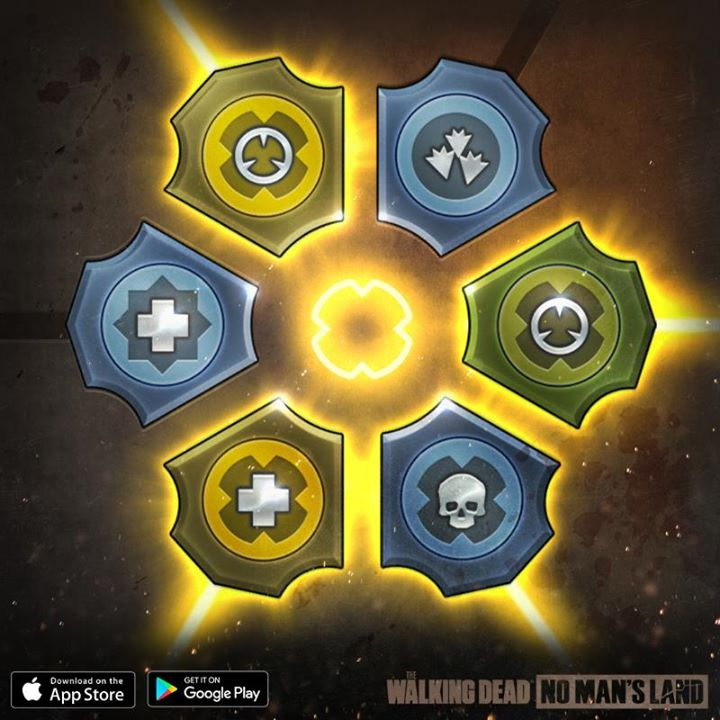

No Man's Land
| Acampamento | Tipos de Missões | Mecânicas/Combate | Guia do Jogo |
|
|
No Man's Land |
|
The Wakling Dead:No Man's Land é um jogo de RPG tático em turnos baseado na série de TV The Walking Dead da AMC.
Esse site é um compilado de informações e guias do jogo que achei relevantes para todos saberem.
|  |

|

|

|
| Mapa dos Emblemas: Guia básico |
Sobreviventes:Emblemas, Talentos e Melhores Heróis |
Edíficios: Qual aprimorar primeiro? |
Guerras de Guilda |
O Site foi ordanizado para separar as informações dos guias do jogo. Grande parte do site foi dedifcado para mostrar informações, mecânicas e estatísticas do jogo, evitando ao máximo expressar minha opinião nesses quesitos.
A aba Guia do Jogo expressa dicas, táticas e opiniões sobre certos aspectos do jogo, assim podendo ajudar outros jogadores a melhorar no jogo.
Esse site foi criado por Natsu Dark, a fim de ajudar outros jogadores a encontrarem informações e dicas para melhorar sua jogatina no jogo The Walking Dead No Man's Land. Todas as informaçõesdadas aqui foram retiradas com ajuda da comunidade do jogo, então os devidos créditos devem ser dados aos jogadores.
Fontes utilizadas